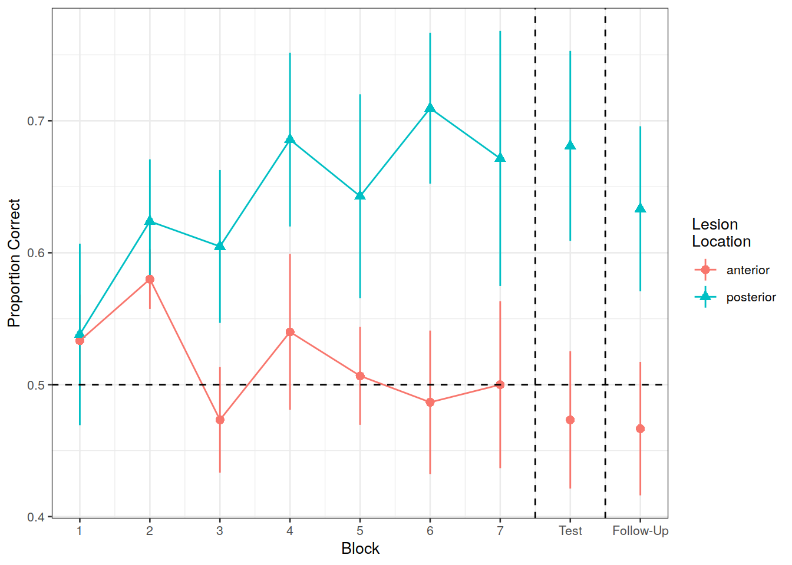

Chapter 3 MLR for longitudinal data (growth curve analysis)
Packages
- lme4
- tidyverse
- effects
We will also be needing to access some useful functions from Dan for getting p-values and coding polynomials.
The source() function basically takes in R code and evaluates it. You can download R scripts with Dan’s code here and here.
However, you can also source them directly from the URLs, and read them into your environment:
Lecture Slides
The lecture slides can be accessed here. The data for the lecture can be found at https://edin.ac/2TieJK0.
Background & Reading
3.1 Introduction
3.2 Exercise 1
The task
Use natural (not orthogonal) polynomials to analyze decline in performance of 30 individuals with probable Alzheimer’s disease on three different kinds of tasks - Memory, complex ADL, and simple ADL.
► Question
Read the data in to R from the following url: https://edin.ac/35Njwpl . The data is in .rda format.
► Question
Plot the observed data (the performance over time for each type of task).
► Question
Why are natural polynomials more useful for these data?
► Question
Fit the GCA model(s).
Steps required:
- Add 1st and 2nd order natural polynomials to the data using the
code_poly()function. - Create a baseline model, in which performance varies over time, but no differences in Task are estimated. Think about random effect structure - what are the observations grouped by? Are observations nested?
- Create a new model with a fixed effect of Task
- Create a new model in which performance varies linearly over time between Task type.
- Create a new model in which linear and quadratic performance over time varies between Task type.
- Run model comparisons.
Interpret the results of your full model
► Question
Look at the summary() of your full model, and try using the get_pvalues() function on it.
Which terms show significant effects of experimental factors?
► Question
To what extent do model comparisons and the parameter-specific p-values yield the same results?
► Question
Plot model fit
3.3 Exercise 2: Logistic GCA
Re-analyze TargetFix data using logistic GCA.
The data (.rda format) is available at https://edin.ac/2TieJK0
3.4 Exercise 2: Solution
load(url("https://edin.ac/2TieJK0"))
#make 3rd-order orth poly
TargetFix <- code_poly(TargetFix, predictor="timeBin", poly.order=3, draw.poly=F)
# fit logisitc GCA model
m.log <- glmer(cbind(sumFix, N-sumFix) ~ (poly1+poly2+poly3)*Condition +
(poly1+poly2+poly3 | Subject) +
(poly1+poly2 | Subject:Condition),
data=TargetFix, family=binomial, control = glmerControl(optimizer = "bobyqa"))
summary(m.log)## Generalized linear mixed model fit by maximum likelihood (Laplace Approximation) ['glmerMod']
## Family: binomial ( logit )
## Formula: cbind(sumFix, N - sumFix) ~ (poly1 + poly2 + poly3) * Condition +
## (poly1 + poly2 + poly3 | Subject) + (poly1 + poly2 | Subject:Condition)
## Data: TargetFix
## Control: glmerControl(optimizer = "bobyqa")
##
## AIC BIC logLik deviance df.resid
## 1419.1 1508.0 -685.6 1371.1 276
##
## Scaled residuals:
## Min 1Q Median 3Q Max
## -1.75431 -0.40973 -0.00307 0.37868 2.06240
##
## Random effects:
## Groups Name Variance Std.Dev. Corr
## Subject:Condition (Intercept) 0.032340 0.17983
## poly1 0.401862 0.63393 -0.68
## poly2 0.147989 0.38469 -0.23 0.73
## Subject (Intercept) 0.001751 0.04185
## poly1 0.343615 0.58619 1.00
## poly2 0.001991 0.04462 -1.00 -1.00
## poly3 0.027493 0.16581 -1.00 -1.00 1.00
## Number of obs: 300, groups: Subject:Condition, 20; Subject, 10
##
## Fixed effects:
## Estimate Std. Error z value Pr(>|z|)
## (Intercept) -0.11675 0.06548 -1.783 0.074589 .
## poly1 2.81834 0.29833 9.447 < 2e-16 ***
## poly2 -0.55911 0.16952 -3.298 0.000973 ***
## poly3 -0.32075 0.12771 -2.512 0.012017 *
## ConditionLow -0.26157 0.09095 -2.876 0.004030 **
## poly1:ConditionLow 0.06399 0.33134 0.193 0.846851
## poly2:ConditionLow 0.69502 0.23977 2.899 0.003747 **
## poly3:ConditionLow -0.07066 0.16617 -0.425 0.670679
## ---
## Signif. codes: 0 '***' 0.001 '**' 0.01 '*' 0.05 '.' 0.1 ' ' 1
##
## Correlation of Fixed Effects:
## (Intr) poly1 poly2 poly3 CndtnL pl1:CL pl2:CL
## poly1 -0.288
## poly2 -0.128 0.272
## poly3 -0.100 -0.228 -0.015
## ConditionLw -0.690 0.297 0.081 0.012
## ply1:CndtnL 0.372 -0.552 -0.292 -0.024 -0.541
## ply2:CndtnL 0.080 -0.230 -0.701 0.034 -0.116 0.415
## ply3:CndtnL 0.013 -0.020 0.037 -0.637 -0.003 0.031 -0.056
## convergence code: 0
## boundary (singular) fit: see ?isSingularSimpler random effects: note that the correlations between Subject-level random effects are all +1.00 or -1.00, so can simplify the structure by removing them:
m.log_zc <- glmer(cbind(sumFix, N-sumFix) ~ (poly1+poly2+poly3)*Condition +
(poly1+poly2+poly3 || Subject) +
(poly1+poly2 | Subject:Condition),
data=TargetFix, family=binomial, control = glmerControl(optimizer = "bobyqa"))
summary(m.log_zc)## Generalized linear mixed model fit by maximum likelihood (Laplace Approximation) ['glmerMod']
## Family: binomial ( logit )
## Formula: cbind(sumFix, N - sumFix) ~ (poly1 + poly2 + poly3) * Condition +
## (poly1 + poly2 + poly3 || Subject) + (poly1 + poly2 | Subject:Condition)
## Data: TargetFix
## Control: glmerControl(optimizer = "bobyqa")
##
## AIC BIC logLik deviance df.resid
## 1411.6 1478.3 -687.8 1375.6 282
##
## Scaled residuals:
## Min 1Q Median 3Q Max
## -1.69598 -0.41491 -0.00141 0.33691 2.07563
##
## Random effects:
## Groups Name Variance Std.Dev. Corr
## Subject.Condition (Intercept) 0.03404 0.1845
## poly1 0.42307 0.6504 -0.63
## poly2 0.15312 0.3913 -0.25 0.70
## Subject poly3 0.00000 0.0000
## Subject.1 poly2 0.00000 0.0000
## Subject.2 poly1 0.44471 0.6669
## Subject.3 (Intercept) 0.00000 0.0000
## Number of obs: 300, groups: Subject:Condition, 20; Subject, 10
##
## Fixed effects:
## Estimate Std. Error z value Pr(>|z|)
## (Intercept) -0.11770 0.06544 -1.798 0.07210 .
## poly1 2.82162 0.31822 8.867 < 2e-16 ***
## poly2 -0.55892 0.17054 -3.277 0.00105 **
## poly3 -0.31340 0.11646 -2.691 0.00712 **
## ConditionLow -0.26066 0.09280 -2.809 0.00497 **
## poly1:ConditionLow 0.06593 0.33782 0.195 0.84527
## poly2:ConditionLow 0.69049 0.24206 2.853 0.00434 **
## poly3:ConditionLow -0.06654 0.16627 -0.400 0.68903
## ---
## Signif. codes: 0 '***' 0.001 '**' 0.01 '*' 0.05 '.' 0.1 ' ' 1
##
## Correlation of Fixed Effects:
## (Intr) poly1 poly2 poly3 CndtnL pl1:CL pl2:CL
## poly1 -0.379
## poly2 -0.129 0.301
## poly3 -0.018 0.029 -0.054
## ConditionLw -0.705 0.267 0.092 0.012
## ply1:CndtnL 0.357 -0.528 -0.284 -0.027 -0.509
## ply2:CndtnL 0.092 -0.212 -0.703 0.038 -0.131 0.402
## ply3:CndtnL 0.012 -0.020 0.037 -0.699 -0.003 0.033 -0.056
## convergence code: 0
## boundary (singular) fit: see ?isSingularPlot model fit
ggplot(TargetFix, aes(Time, meanFix, color=Condition)) +
stat_summary(fun.data=mean_se, geom="pointrange") +
stat_summary(aes(y=fitted(m.log)), fun=mean, geom="line") +
stat_summary(aes(y=fitted(m.log_zc)), fun=mean, geom="line", linetype="dashed") +
theme_bw() + expand_limits(y=c(0,1)) +
labs(y="Fixation Proportion", x="Time since word onset (ms)")